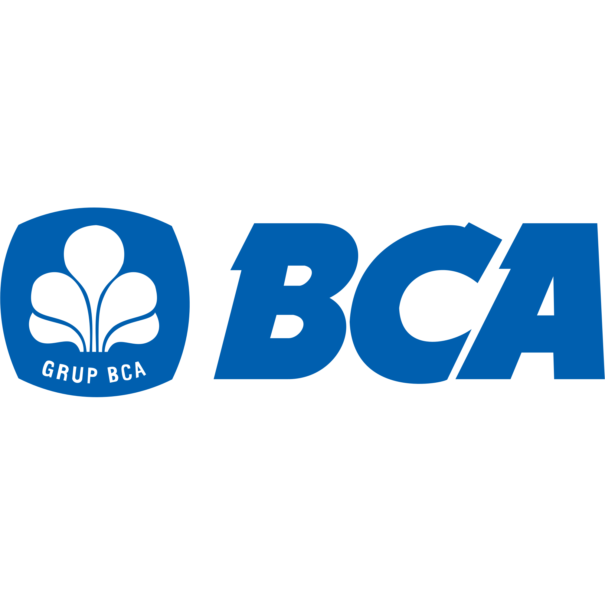

Salurkan donasi melalui:

1234567890
 08xxxxxxxx
08xxxxxxxx
InsyaAllah akan diadakan kajian rutin setiap Ahad ba’da sholat Subuh bersama Ustadz Ahmad.
Diharapkan partisipasi jamaah pada hari Minggu pukul 07.00 WIB untuk kegiatan bersih-bersih masjid.
Panitia zakat menerima zakat fitrah mulai H-7 Idul Fitri di sekretariat masjid.
Salurkan donasi melalui:
08xxxxxxxx